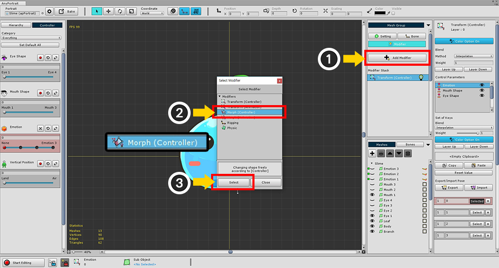
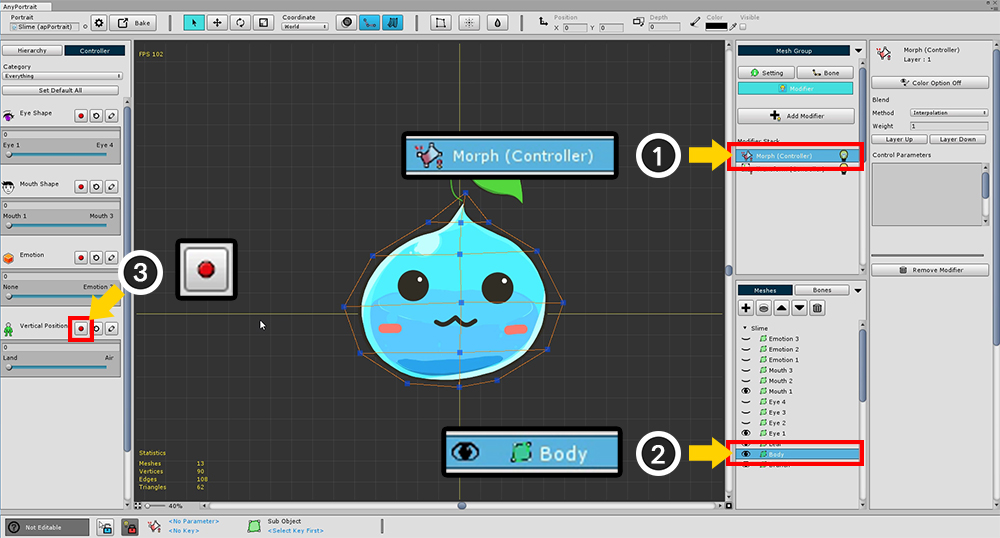
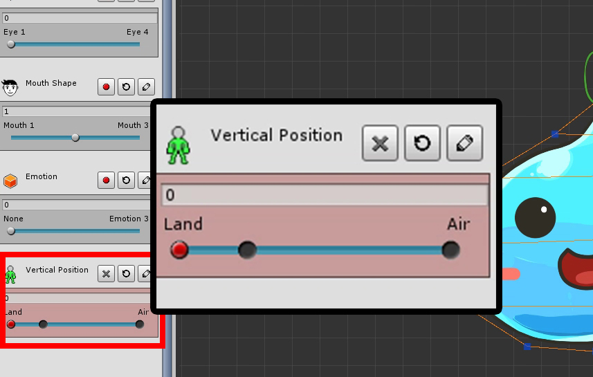
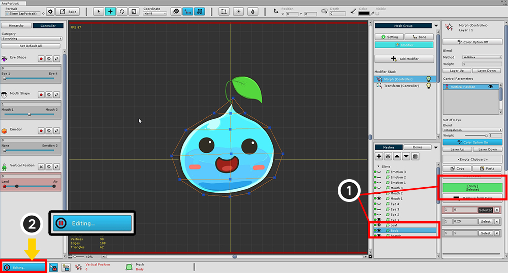
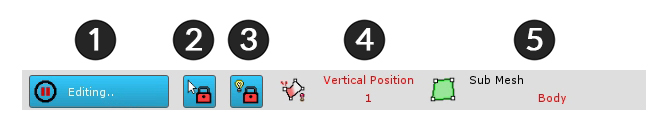
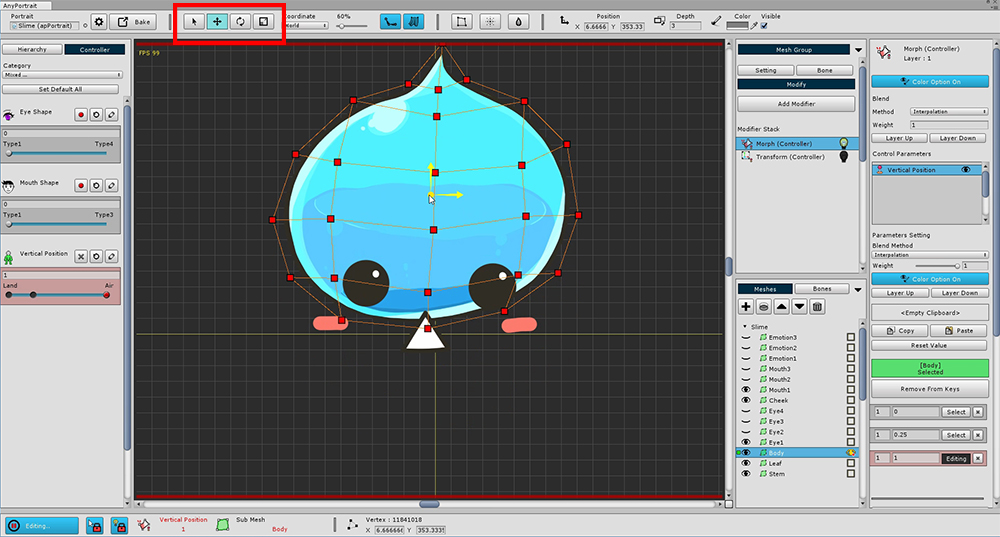
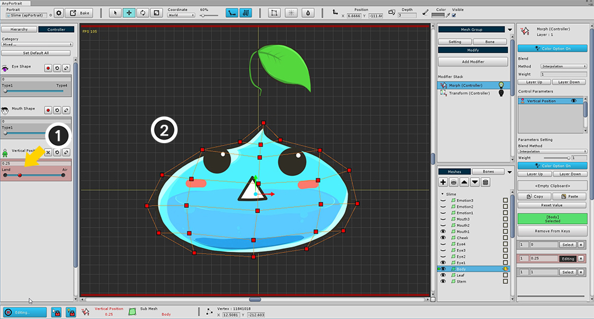
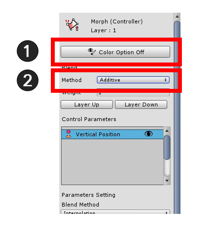

AnyPortrait > Getting Started > 1.7. Using Morph Modifier
1.7. Using Morph Modifier
1.0.0
The Morph Modifier provides the ability to directly deform vertices.
You can do more precise work than the Transform Modifier.
It is mainly used to adjust the appearance of illustrations to make them feel bulky or lively.
This page contains a basic transformation process by adding a Morph Modifier.
To see the tools for editing vertices, go to the next page.

(1) Press the Add Modifier button and (2) select and add the "Morph (Controller)" modifier.

The Morph modifier's working screen is not much different from the Transform modifier's working screen.
(1) Select the Morph (Controller) modifier, and then (2) select "Body" Mesh.
And (3) press the Record button of the Vertical Position parameter.

Add the key to the Control Parameter as you learned earlier.
The right side of the Vertical Position parameter means "slime floating in the air", and the left side will represent "the slime in the ground".
Add a key to the "0", "0.25", "1" position of each parameter.

To apply Morph, you need to select the vertex and prepare it for editing.
Currently, you can not select vertices or edit vertices.
This is because editing is possible only in "Editing status".
To edit, (1) Make sure that the target body mesh is registered,
(2) Press "Start Editing" button to make "Editing status".
(If you press the button again, "Editing status" is released.)

At the bottom of the screen there is a UI associated with the "Editing status".
1. Editing button : It is a button to turn on / off the Editing status. If editing is not possible, it will be automatically turned off. The shortcut is the A .
2. Selection Lock : You can not select other meshes or bones on the workspace. The shortcut is the S .
3. Modifier Lock : In the On state, only the modifier in operation is calculated and the rest is turned off. In the Off state, the calculation is done only for the "non-colliding modifier". The shortcut is the D .
4. Selected Input Value : The control parameter and key value selected as the current input value. The target may change depending on the modifier.
5. Selected object : Objects to be processed. This is the "Body" mesh.Now let's modify the vertex and use the "Morph" function.

After (1) moving the slider to the key that corresponds to "floating in the air", drag the mouse to (2) select all the vertices.

Use the Move tool (shortcut is W ) to move vertices upward.

(1) Move the slider to a key with a value of 0.25 and (2) create a "flat slime".
It is easy to create using the Move and Scale tools.
If you have finished all the above steps, you can see the slime going up and down every time you move the slider like the movie clip below.

In this sample, the Morph modifier does not control color.
If you do not control the color, turn off the Color Option in Settings to avoid conflict with other modifiers.
(1) Press the Color Option button to turn it off as shown in the above image.
Change the Blend Method from Interpolation to (2) Additive.
If you are merging multiple modifiers, you typically use the Additive method.
If you choose the interpolation method, the value will be overwritten, so use it only for special cases.